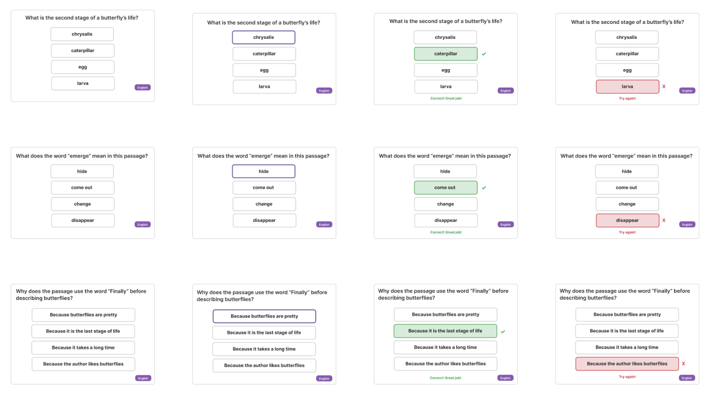

Instructional Design · McGraw Hill
Component-Based Bilingual Learning Prototype
A Figma component library and prototype demonstrating the design thinking behind a new McGraw Hill product build.


- Single-source system with DOK 1–3 variants and bilingual configurations — consistency across 50+ lessons without divergent implementations.
- WCAG 2.2 AA built into every variant at design time. Contrast, semantic structure, and interactive states verified before a line of code is written.
- Side-by-side bilingual scaffolding and progressive DOK complexity treat cognitive load as an architectural constraint, not a UX afterthought.
Impact at McGraw Hill
Developing first-of-its-kind product to deliver to students and teachers nationwide. Cross-functional collaboration with curriculum, engineering, and QA teams.
All content original. Methodology reflects workflow implemented at McGraw Hill.